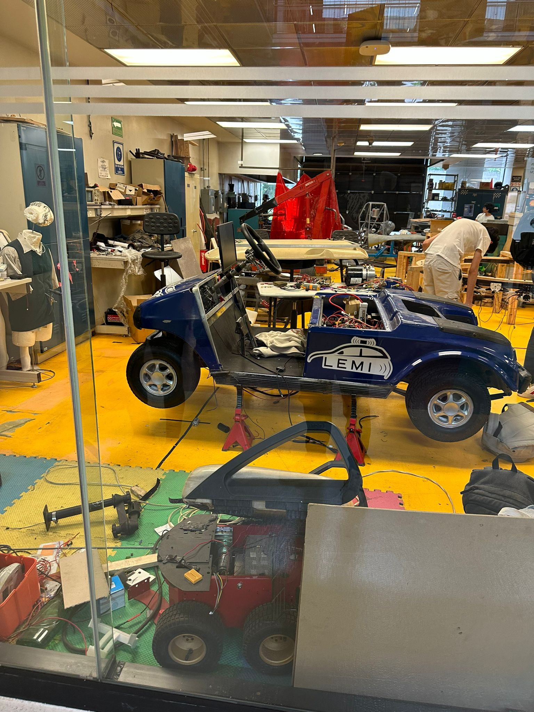
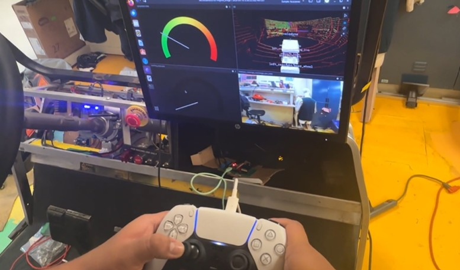

Documentación
1. Introducción
El proyecto BlueCar es una iniciativa del Laboratorio de Electromovilidad Inteligente (LEMI) del Tecnológico de Monterrey, Campus Ciudad de México. El objetivo es desarrollar un kit de aprendizaje y desarrollo práctico para estudiantes de ingeniería mecatrónica, robótica y electrónica.
2. Problemática
- Vehículo y componentes en mal estado.
- Falta de elementos prácticos para el desarrollo de competencias profesionales en carreras de ingeniería.
- Falta de continuidad en proyectos de investigación.
3. Objetivos
- Integración de sensores y actuadores por medio de redes vehiculares internas en el vehículo BlueCar para desarrollar al menos 3 prácticas escolares.
- Implementar sistemas eléctricos, electrónicos y de control para la propulsión y dirección del vehículo, logrando una autonomía de al menos 30 minutos.
- Integrar sistemas de 3 sensores y 2 actuadores en una computadora central.
- Implementar visión por computadora con una exactitud de 90%.
4. Alcance
El proyecto BlueCar tiene como objetivo ser replicable en diferentes planteles del Tecnológico de Monterrey y otras instituciones educativas, facilitando el aprendizaje práctico en ingeniería.
5. Competidores

- Ventajas: 10.8 kW-h de capacidad de baterías, tracción en las 4 llantas.
- Desventajas: Interfaz reservada para conducción autónoma, incompatibilidad de drivers, costo elevado, baja versatilidad.
6. Ficha Técnica
| Componente | Especificación |
|---|---|
| Motor | Club Car, 36-48 voltios, 8-11.4 hp, 30 km/h aceleración máxima |
| Controlador | Alltrax 300 A, 36-48 V |
| ESP-32 | 3.3 V |
| Sistema de Energía | 12V, 750 amperes de arranque a 0°C, 600 amperes de arranque a -18°C, autonomía de 4.7 kWh |
| Cableado | Calibres 2, 8 y 16 |
7. Resultados
- Duración de baterías: 41 minutos a máxima potencia.
- Dirección: Error máximo de 1°, desplazamiento de 66° en 1.93 segundos, 100% confiabilidad.
- Procesamiento computacional: 98% de fidelidad en algoritmos de detección de personas.
8. Conclusiones
- Innovación y eficacia en la educación práctica.
- Mejora en las habilidades técnicas de los estudiantes.
- Integración de sistemas avanzados que sientan las bases para futuras mejoras en vehículos autónomos.
9. Análisis Económico
- Gastos: LiDAR (16,000 MXN), cámara de profundidad (6,956 MXN), computadora Gigabyte (13,000 MXN), carrito de golf (30,000 MXN), baterías (2,000 MXN), ESP-32 (396 MXN), encoder absoluto industrial (5,300 MXN), pintura (600 MXN), cables (250 MXN), productos de limpieza (400 MXN), poleas (400 MXN), componentes electrónicos (200 MXN).
- Total: 75,502 MXN.
10. ROS2
El proyecto BlueCar utiliza ROS2 (Robot Operating System) para la comunicación y el control. ROS2 permite la integración de diversos sensores y actuadores, facilitando el desarrollo de algoritmos de navegación autónoma y visión por computadora.
11. Computadora
Se utiliza una laptop Gigabyte con un procesador Intel i7, una tarjeta gráfica NVIDIA RTX 3070 Ti y 16 GB de RAM. Esta configuración asegura un rendimiento óptimo para el procesamiento de datos en tiempo real y la ejecución de algoritmos de visión y control.
12. Comunicación CAN
La comunicación interna del vehículo se realiza mediante el bus CAN (Controller Area Network). Este sistema permite la transmisión eficiente y fiable de datos entre los diferentes componentes del vehículo, como los sensores, actuadores y la unidad de control central.
13. Propulsión
El sistema de propulsión del BlueCar está compuesto por un motor eléctrico de 36-48V, capaz de entregar entre 8 y 11.4 hp. El controlador Alltrax de 300A gestiona la potencia del motor, permitiendo una aceleración máxima de 30 km/h.
14. Dirección
La dirección del vehículo se controla mediante un sistema de actuadores que aseguran un error máximo de 1°, con un desplazamiento de 66° en 1.93 segundos, logrando una confiabilidad del 100%.